We support construction teams with digital project oversight, material management, and compliance tracking for every build.

The right tools help construction teams reduce delays, control costs, and improve quality without sacrificing safety.
Core construction indicators for schedule, cost, and quality control.
Three practical steps for delivering complex building programs.
Large projects only succeed when cost, schedule, and compliance are visible in real time. We help contractors and owners connect planning, field execution, and finance so every build is easier to predict.
Tasks slip when teams rely on outdated plans and paper-based updates.
Materials, labour, and change orders are hard to manage without integrated controls.
Missing permits, inspections, or safety records delay handovers and increase liability.
Field crews, project managers, and finance teams work from different versions of the truth.
Scope changes are difficult to capture, price, and communicate across the project.
Book a consultation to map your project controls, reduce risk, and simplify field-to-office collaboration.